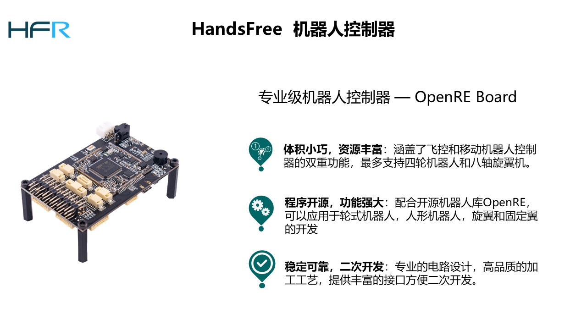
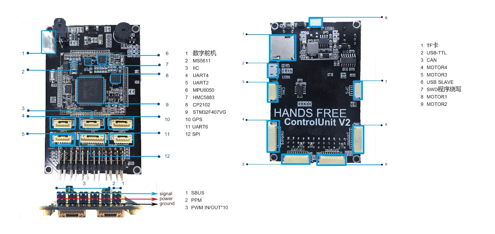
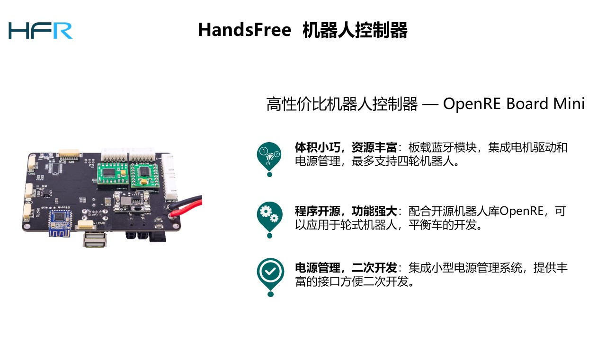
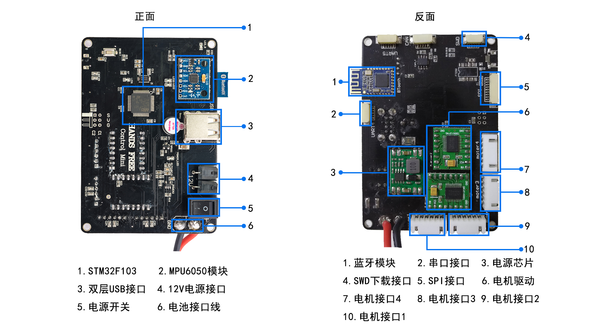

OpenRE Board 使用手册
OpenRE Board 是HandsFree Team根据HandsFree开源项目的硬件标准开发的一款的运动控制器，是HandsFree所有平台的重要组成部分，可以应用于轮式机器人，人形机器人，平衡车，旋翼和固定翼的开发。
由于HandsFree建立了一个自己的机械，电路，嵌入式标准，所以OpenRE Board还会支持HandsFree Team后续开发的软硬件。你既可以用这款控制器进行自主开发，也可以使用HandsFree嵌入式软件库OpenRE来开发，OpenRE提供了足够多的底层驱动代码和机器人代码库，以及代码的使用手册和测试案例，而且所有源码都是开源的。
下载OpenRE源码： OpenRE源码 学习OpenRE： OpenRE教程
OpenRE Board 使用手册
OpenRE Board 控制器是在第一代主控基础上发展而来一款多用控制器，不仅仅可以用于控制小车等地面移动平台，也可以用于飞行器的控制，在吸取第一代主控的优点和不足的基础上进行改造，设计了自己的核心板，并且将众多传感器集成在核心板上，主控板支持7~12V的电源输入。
专业级机器人控制器 OpenRE Board

板载资源

关键特征
- 168MHZ STM32F407 Cortex M4
- 板载三轴陀螺仪，三轴加速计，气压计，三轴磁力计。
- 10PWM输入输出。
- USBTTL, USB，microSD卡。
- 支持机型： 两轮平衡车，两轮差移动平台，三轮全向平台，四轮差速平台，四轮麦克纳姆轮全向平台，数字舵机人形，固定翼，四六八轴旋翼飞行器等。
处理器
- 32bit STM32F407 VGT6 Cortex M4 core with FPU
- 168MHZ
- 192KB SRAM 1M Flash
- 封装类型：LQFP, 引脚个数：100
板载传感器
- MPU6050 6轴运动处理 ， 加速计陀螺仪。
- MEAS MS5611高精度气压计。
- 3-轴数字罗盘IC HMC5883L
板载IC
- 大容量IIC快速存储器512KB EEPROM
- 专用ADC基准电压芯片LM4030A，电压采样精度高，可接固定翼用的空速计。
- 板载5V，3A大电流稳压IC。
- 集成CP2102 USB串口芯片。
- 集成VP230 CAN控制芯片。
- 集成三态门IC，用于数字舵机通信
- 板载多路电源保护器件，防反接，防过流，抵抗静电，支持多路USB和电源同时供电。
- 板载SBUS反相器电路，支持遥控器信号读取。
板载接口
- 四个电机控制以及编码器接口，支持常见类型的机器人平台控制。
- 10路PWM输出，可同时作为输入，用于搭建多轴飞行器或者舵机控制。
- 三路串口，USART2 UART4 USART6。
- 一路USB串口 USART1。
- 一个USB主从机接口。
- 一个microSD卡接口。
- 一路SBUS遥控器采集接口，用于采集航模遥控器的信号。
- 一路PPM遥控器采集接口，用于采集航模遥控器的信号，PPM接口还可用于扩展空速计。
- 一路数字舵机控制接口,支持AX12系列的数字舵机。
- 一个GPS接口，支持外部IIC陀螺仪和磁力计，兼容PX4接口。
- 一路CAN总线接口，可用于通信组网。
- 一路IIC接口，可用于扩展外部惯导传感器或者超声波等。
- 一路SPI接口。
- 除了以上，板载还有多个led显示，一个蜂鸣器，SWD烧写，复位电路等，电源电压采集电路等。
- 电源支持7~28V输入。
总结
HandsFree控制器，板载资源十分丰富，下料十足，可满足常见形态机器人研究需求，同时不惜成本，尽量选择稳定可靠的接口和IC，光是一个ADC基准电压的芯片就十几块钱，MOLEX接口也是选用昂贵的自锁接口，这主要是因为HandsFree团队本身也是使用这款控制器进行研究开发的，在很多细节方面考虑也是为了满足自己需求。
同时HandsFree团队开放了OpenRE嵌入式机器人库，用户可以方便的在此库的基础上进行应用程序构建。OpenRE支持在linux环境下的开发，大大方便了ROS开发者和不懂嵌入式的机器人开发者。
OpenRE Board Mini使用手册
OpenRE Board Mini 是HandsFree Team根据HandsFree开源项目的硬件标准开发的一款的运动控制器，是HandsFree Mini移动平台的重要组成部分。Mini移动平台是HandsFree团队专为广大机器人学生爱好者开发的一款助学平台，价格低廉，性价比超高，麻雀虽小五脏俱全，Mini移动平台同样可以用来进行移动导航和视觉开发。我们根据Mini移动平台的特点将驱动集成在Mini控制器上。同时增加了蓝牙模块和集成的MPU6050。其功能齐全性价比超高，配合方便使用的嵌入式代码受到广大学生用户的喜爱。
OpenRE Board Mini 控制器支持12V电源输入，同时允许转接电源，带有两个12V电源转接口，允许转接到其他设备使用。Mini控制板上设置一个了电源开关，接通12V电源后按下开关主控器便开始工作，此时电源指示灯会变亮。控制板四周接有4个电机接口，两个串口，一个SPI接口，一个串口usb接口，一个SWD接口，一个can总线接口。同时控制板上集成了两块电机驱动（支持驱动四个电机），一块MPU6050，一个蓝牙，极大的方便了用户进行开发。
高性价比机器人控制器 OpenRE_Board_Mini

板载资源

板载资源
- STM32F103芯片
- mpu6050加速计陀螺仪
- 4路电机控制接口：支持HandsFree Team开发的电机驱动，可用于搭载HandsFree平衡车，HandsFree Mini移动平台。
- 1路can总线：板载1个can接口，可用于通信，或者扩展hands free imu 高精度单轴陀螺仪
- 1路spi接口
- 1路双座USB母座接口：提供转接5V电源
- 2路串口接口： usart4 uart5
- 一个usb串口：采用ft232 usb 串口芯片 usart4，可usb线升级固件和通信
- 1个swd程序烧写接口
- 1个蓝牙